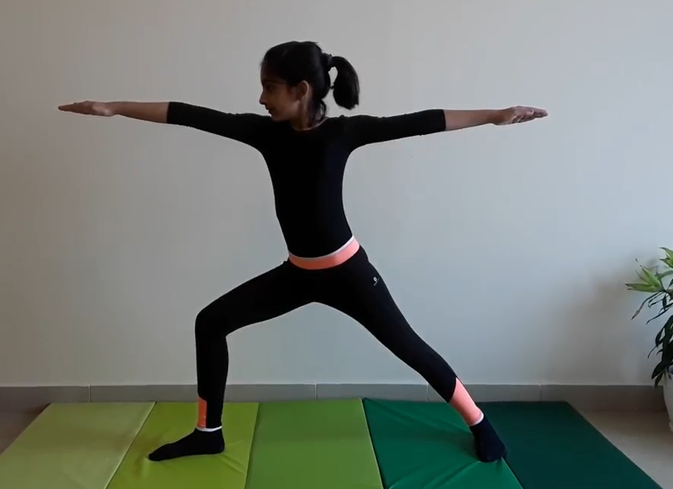

WARRIOR POSE 2

Steps to perform Warrior Pose 2
- Stand in a wide position with your feet parallel and approximately three feet apart. Extend your arms straight out from your sides. Relax your shoulders away from your ears.
- Turn your left foot out 90 degrees, then bend your knee into a lunge. Be sure to keep your knee above your ankle and pointing over your toes. Turn your head to the left and look over your fingers. Repeat on the other side.